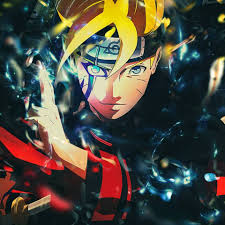
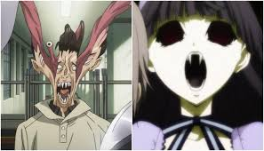

- 

- 
01
Debido a una mala broma hecha en vivo en un programa de TV, Jin-Kyung terminó siendo arrestado y catalogado como un "depredador infantíl" obteniendo un Trastorno de Ansiedad Social.
02
Thorfinn, hijo de uno de los guerreros más grandes de los vikingos, se encuentra entre los mejores luchadores de la alegre banda de mercenarios dirigida por el astuto Askeladd
03
Hace 10 años, después de que "La Puerta" que conectaba el mundo real con el mundo de los monstruos se abriera, algunas de las personas recibieron el poder de cazar los monstruos que vivían al otro lado de esta.
04
Un hombre que fue abandonado por el mundo, un hombre esclavo del dinero, un hombre conocido como ‘El Legendario Dios de la Guerra’ en el popular MMORPG Continent Of Magic
05
Ahora que estoy de vuelta, ¡no permitiré que mis seres queridos mueran de nuevo!" El Laberinto de las Sombras: la existencia más catastrófica que la humanidad ha enfrentado en la historia.